Hodnota číslic
-
Hodnota číslic
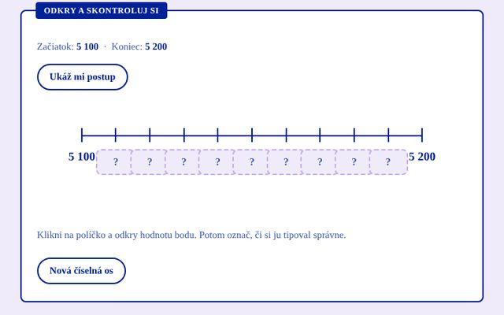
Detektív číselnej osi
Zisti chýbajúce hodnoty na číselnej osi pomocou postupu: rozdiel, delenie, označenie.
-
Hodnota číslic
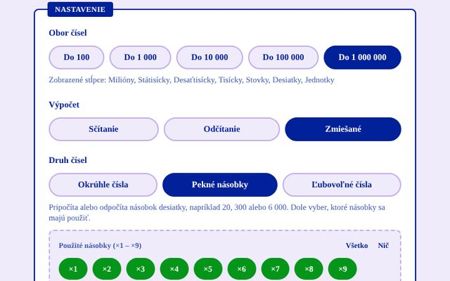
Hodnota číslic: precvičovanie
Sleduj žetóny v tabuľke hodnoty číslic a v časovom limite vypočítaj sčítania a odčítania.
-
Hodnota číslic
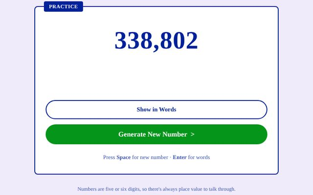
Čísla slovom (English)
Precvičuj písanie veľkých čísel slovami v angličtine. Táto pomôcka je celá po anglicky.
-
Hodnota číslic
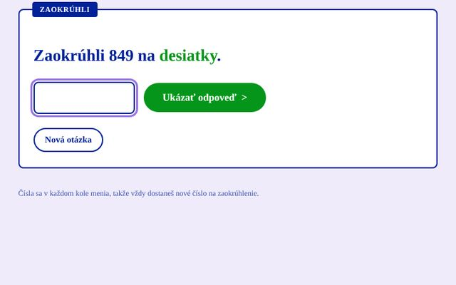
Zaokrúhľovanie: precvičovanie
Zaokrúhli čísla na desiatky, stovky alebo tisíce a na číselnej osi uvidíš, ako to funguje.
-
Hodnota číslic
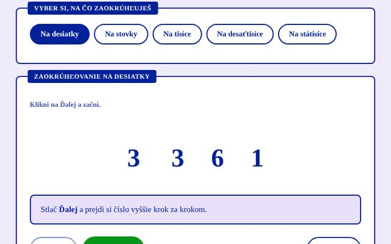
Zaokrúhľovanie krok za krokom
Pomôcka na učenie: krok za krokom ukáže postup zakrúžkuj, podčiarkni, uprav, doplň nuly pri zaokrúhľovaní ľubovoľného čísla.
Sčítanie a odčítanie
-
Sčítanie, odčítanie
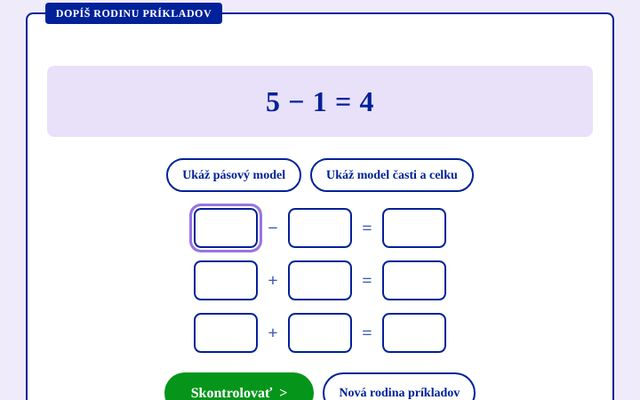
Rodiny príkladov
Z jedného príkladu odvoď ďalšie tri z tej istej rodiny — sčítanie a odčítanie alebo násobenie a delenie.
-
Sčítanie, odčítanie
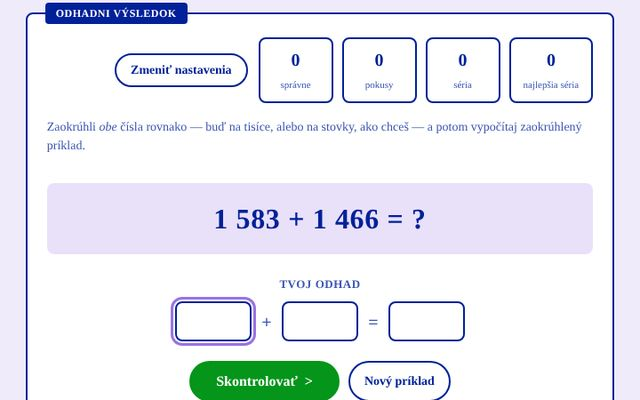
Odhad zaokrúhľovaním
Zaokrúhli obe čísla v sčítaní alebo odčítaní na tisíce alebo stovky a so zaokrúhlenými číslami odhadni výsledok.
-
Sčítanie, odčítanie
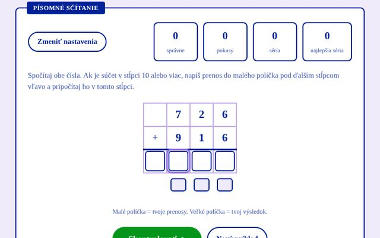
Písomné sčítanie a odčítanie
Vypočítaj príklad v mriežke pod sebou, zapíš si vlastné prenosy alebo výmeny a potom napíš výsledok.
-
Sčítanie, odčítanie
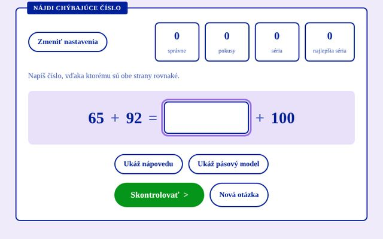
Chýbajúce čísla
Nájdi chýbajúce číslo v dvoch rovnakých výpočtoch tak, že si všimneš, ako sa jedno číslo zmenilo na druhé.
Násobenie a delenie
-
Násobenie, delenie
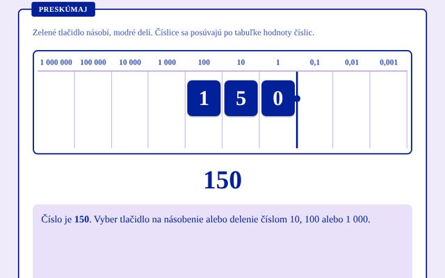
Násobenie a delenie 10, 100, 1 000
Sleduj, ako sa číslice posúvajú po tabuľke hodnoty číslic pri násobení a delení 10, 100 alebo 1 000, a potom precvičuj.
-
Násobenie, delenie
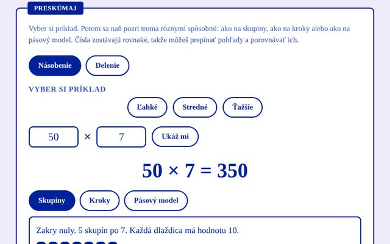
Násobenie a delenie násobkami 10
Pozri si 6 × 800 alebo 3 500 : 700 ako skupiny, kroky a pásový model a potom precvičuj.
-
Násobenie, delenie
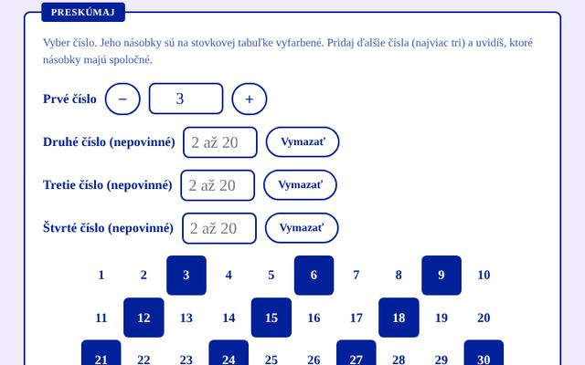
Násobky a spoločné násobky
Preskúmaj násobky v stovkovej tabuľke a potom precvičuj hľadanie násobkov, spoločných násobkov a najmenšieho spoločného násobku.
-
Násobenie, delenie
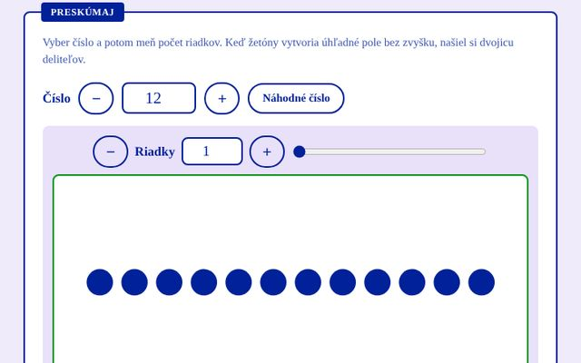
Delitele a spoločné delitele
Pomocou žetónov nájdi delitele čísla a potom precvičuj vypisovanie deliteľov a spoločných deliteľov.
-
Násobenie, delenie
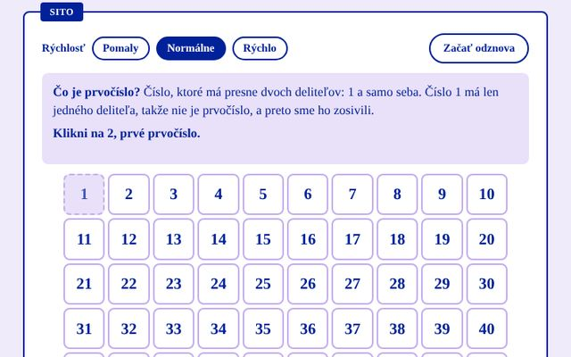
Prvočísla
Pozri sa, ako Eratostenovo sito nájde prvočísla do 100, a potom precvičuj rozlišovanie prvočísel a zložených čísel.
-
Násobenie, delenie
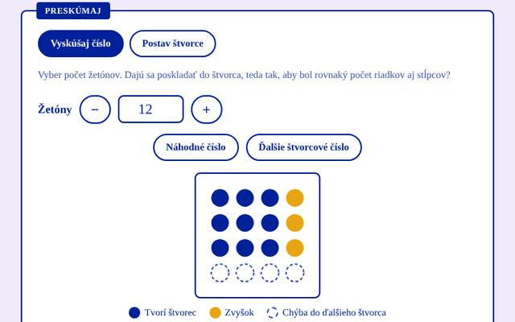
Štvorcové čísla
Pomocou žetónov zisti, prečo sa štvorcovým číslam tak hovorí, a potom precvičuj štvorcové čísla a zápis na druhú.
-
Násobenie, delenie
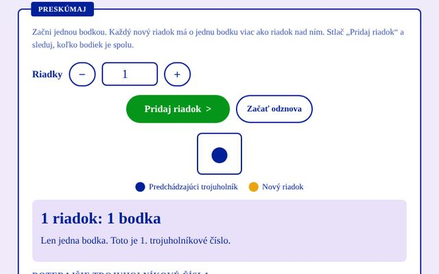
Trojuholníkové čísla
Stavaj trojuholníky riadok po riadku, zisti, odkiaľ sa trojuholníkové čísla berú, a potom precvičuj hľadanie ďalšieho.
Zlomky
-
Zlomky
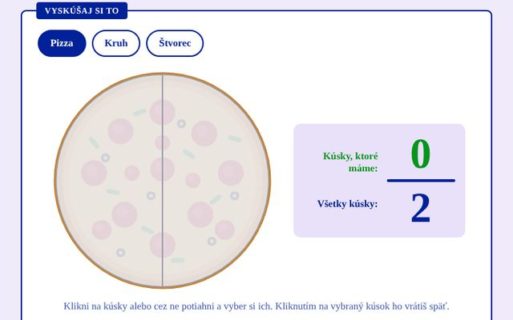
Zlomky: Kúsky
Rozrež pizzu, kruh alebo štvorec na rovnaké kúsky, vyber niektoré a pozri si zlomok číslami aj slovami.
-
Zlomky
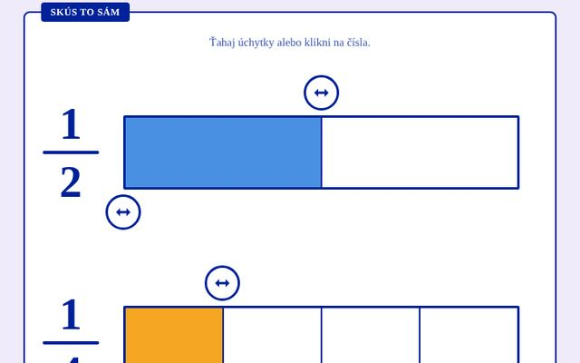
Zlomky: Rovnocenné pásiky
Meň horné a dolné číslo dvoch zlomkových pásikov. Keď pásiky ukazujú rovnaké množstvo, zozelenajú.
-
Zlomky
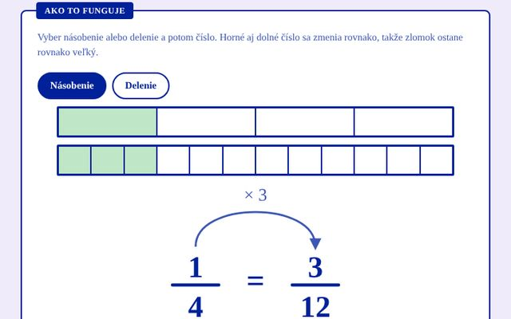
Hľadanie rovnocenných zlomkov
Zisti, prečo sa horné aj dolné číslo musí násobiť alebo deliť tým istým číslom, a potom nájdi chýbajúce číslo.
-
Zlomky
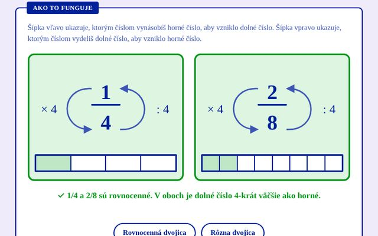
Zlomky: Metóda pomeru
Pozri sa do vnútra zlomku a zisti, koľkokrát sa horné číslo zmestí do dolného. Zlomky s rovnakým pomerom sú rovnocenné.
-
Zlomky
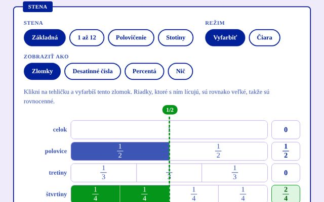
Zlomková stena
Vyfarbi zlomok na stene a uvidíš všetky riadky, ktoré s ním lícujú. Ťahaj čiaru po stene a nájdi rovnocenné zlomky.
-
Zlomky
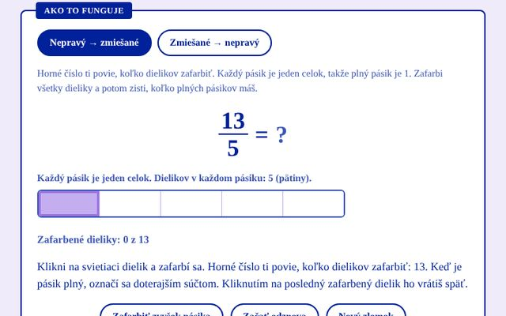
Zmiešané a nepravé zlomky
Zafarbuj dieliky v pásikovom modeli a premieňaj nepravé zlomky na zmiešané čísla a naopak.
-
Nové Zlomky
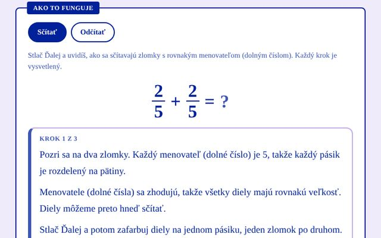
Sčítanie a odčítanie zlomkov
Zafarbuj dieliky v pásikovom modeli a sčítavaj a odčítavaj zlomky s rovnakým menovateľom.
-
Nové Zlomky
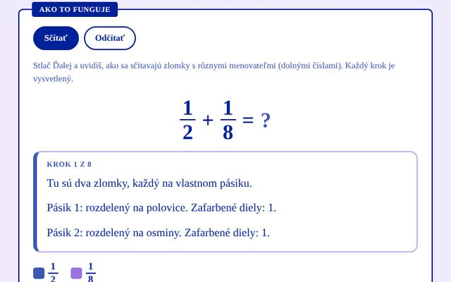
Zlomky s rôznymi menovateľmi
Rozdeľ zlomky na rovnaké diely tak, aby sa dolné čísla zhodovali, a potom ich sčítaj alebo odčítaj.
-
Nové Zlomky
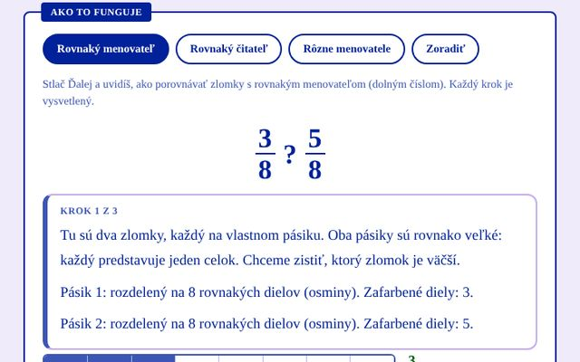
Porovnávanie a zoraďovanie zlomkov
Zisti, ktorý zlomok je väčší, a zoraď zlomky pomocou pásikov rozdelených na rovnaké diely.
Zručnosti v matematike
-
Zručnosti
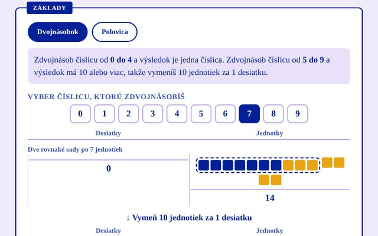
Zdvojnásobovanie a polovice
Sleduj dvojnásobky a polovice s kockami hodnoty číslic vrátane výmeny 10 jednotiek za 1 desiatku, krok za krokom. Potom cvič na šiestich úrovniach.
Nič sa nenašlo. Skús iné slovo.